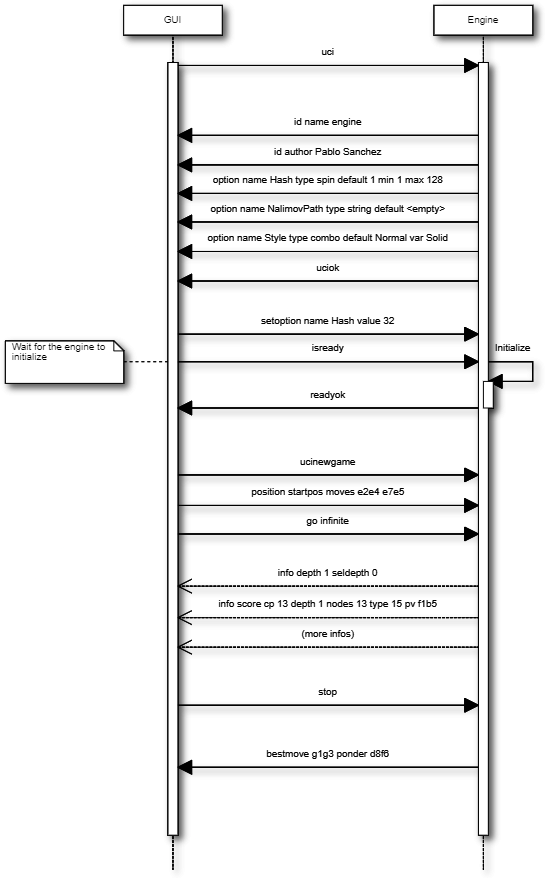

\n ', also all commands the GUI
receives should end with ' \n ', Note: ' \n ' can b
e 0x0d or 0x0a0d or any combination depending on your OS. If you use Engine and GUI in the same OS this
should be no problem if you communicate in text mode, but be aware of this whe
n for example running a Linux engine in a Windows GUI.\n " and " debug on
\n " and " \t debug \t \t
\t on \t \n " all set the debug mode of the engine on.\n
" should switch the debug mode on given that joho is not defined, "debug joho on \n " will
be
undefined however.The move format is in long algebraic notation. A nullmove from the Engine to the GUI should be sent as 0000. Examples: e2e4, e7e5, e1g1 (white short castling), e7e8q (for promotio n)
These are all the command the engine gets from the interface.
tell engine to use the uci (universal chess interface), this will be sent once as a first command after program boot to tell the engine to switch to uci mode. After receiving the uci command the engine must identify itself with the "id" command and send the "option" commands to tell the GUI which engine settings the engine supports if any. After that the engine should send "uciok" to acknowledge the uci mode. If no uciok is sent within a certain time period, the engine task will be killed by the GUI.
switch the debug mode of the engine on and off. In debug mode the engine should send additional infos to the GUI, e.g. with the "info string" command, to help debugging, e.g. the commands that the engine has received etc. This mode should be switched off by default and this command can be sent any time, also when the engine is thinking.
this is used to synchronize the engine with the GUI. When the GUI has sent a command or multiple commands that can take some time to complete, this command can be used to wait for the engine to be ready again or to ping the engine to find out if it is still alive. E.g. this should be sent after setting the path to the tablebases as this can take some time . This command is also required once before the engine is asked to do any search to wait for the engine to finish initializing. This command must always be answered with "readyok" an d can be sent also when the engine is calculating in which case the engine should also immediately answer with "readyok" without stopping the search.
this is sent to the engine when the user wants to change the internal parameters of the
engine. For the "button" type no value is needed. One string will be sent for each para
meter and this will only be sent when the engine is waiting. The name and value of the
option in <id> should not be case sensitive and can inlude spaces. The substrings
"value"
and "name" should be avoided in <id> and <x> to allow unambiguous parsing, for
example do not use <name> = "draw value". Here are some strings for the example belo
w: "setoption name Nullmove value true \n " "setoption name Selectivity value 3
\n " "setoption name Style value Risky \n " "setoption name Cle
ar Hash \n " "setoption name NalimovPath value c:chess \t
b4;c:chess \t b5 \n "
the user doesn't want to register the engine now.
the engine should be registered with the name <x>
the engine should be registered with the code <y>
"register later" "register name Stefan MK code 4359874324"
this is sent to the engine when the next search (started with "position" and "go") will be from a different game. This can be a new game the engine should play or a new game i t should analyse but also the next position from a testsuite with positions only. If the GUI hasn't sent a "ucinewgame" before the first "position" command, the engine shouldn't expe ct any further ucinewgame commands as the GUI is probably not supporting the ucinewgame command. So the engine should not rely on this command even though all new GUIs should support it. As the engine's reaction to "ucinewgame" can take some time the GUI should always send "isready" after "ucinewgame" to wait for the engine to finish its operation.
set up the position described in fenstring on the internal board and play the moves on the internal chess board. if the game was played from the start position the string "sta rtpos" will be sent Note: no "new" command is needed. However, if this position is from a different game than the last position sent to the engine, the GUI should have sent a "ucinew game" inbetween.
restrict search to this moves only Example: After "position startpos" and "go infinite searchmoves e2e4 d2d4" the engine should only search the two moves e2e4 and d2d4 in the initial position.
start searching in pondering mode. Do not exit the search in ponder mode, even if it's mate! This means that the last move sent in in the position string is the ponder move. T he engine can do what it wants to do, but after a "ponderhit" command it should execute the suggested move to ponder on. This means that the ponder move sent by the GUI can be interp reted as a recommendation about which move to ponder. However, if the engine decides to ponder on a different move, it should not display any mainlines as they are likely to be misin terpreted by the GUI because the GUI expects the engine to ponder on the suggested move.
white has x msec left on the clock
black has x msec left on the clock
white increment per move in mseconds if x > 0
black increment per move in mseconds if x > 0
search x plies only.
search x nodes only,
search for a mate in x moves
search exactly x mseconds
search until the "stop" command. Do not exit the search without being told so in this mode!
stop calculating as soon as possible, don't forget the "bestmove" and possibly the "ponder" token when finishing the search
the user has played the expected move. This will be sent if the engine was told to ponder on the same move the user has played. The engine should continue searching but switch from pondering to normal search.
quit the program as soon as possible
this must be sent after receiving the "uci" command to identify the engine,
e.g. "id name Shredder X.Y \n "
this must be sent after receiving the "uci" command to identify the engine,
e.g. "id author Stefan MK \n "
Must be sent after the id and optional options to tell the GUI that the engine has sent all infos and is ready in uci mode.
This must be sent when the engine has received an "isready" command and has processed all input and is ready to accept new commands now. It is usually sent after a command tha t can take some time to be able to wait for the engine, but it can be used anytime, even when the engine is searching, and must always be answered with "isready".
the engine has stopped searching and found the move <move> best in this position. the engine can send the move it likes to ponder on. The engine must not start pondering automatically. this command must always be sent if the engine stops searching, also in pondering mode if there is a "stop" command, so for every "go" command a "bestmove" command is needed! Directly before that the engine should send a final "info" command with the final search information, the the GUI has the complete statistics about the last search.
this is needed for copyprotected engines. After the uciok command the engine can tell the
GUI, that it will check the copy protection now. This is done by "copyprotection chec
king". If the check is ok the engine should send "copyprotection ok", otherwise
"copyprotection error". If there is an error the engine should not function properly but
should not qu
it alone. If the engine reports "copyprotection error" the GUI should not use this engine
and display an error message instead! The code in the engine can look like this TellGUI("cop
yprotection checking \n "); // ... check the copy protection here ... if(ok)
TellGUI("copyprotection ok \n "); else TellGUI("copyprotection error
\n ");
this is needed for engines that need a username and/or a code to function with all features. Analog to the "copyprotection" command the engine can send "registration checking" after the uciok command followed by either "registration ok" or "registration error". Also after every attempt to register the engine it should answer with "registration checking" a nd then either "registration ok" or "registration error". In contrast to the "copyprotection" command, the GUI can use the engine after the engine has reported an error, but should i nform the user that the engine is not properly registered and might not use all its features. In addition the GUI should offer to open a dialog to enable registration of the engine. To try to register an engine the GUI can send the "register" command. The GUI has to always answer with the "register" command if the engine sends "registration error" at engine star tup (this can also be done with "register later") and tell the user somehow that the engine is not registered. This way the engine knows that the GUI can deal with the registration p rocedure and the user will be informed that the engine is not properly registered.
search depth in plies
selective search depth in plies, if the engine sends seldepth there must also be a "depth" present in the same string.
the time searched in ms, this should be sent together with the pv.
x nodes searched, the engine should send this info regularly
the best line found
this for the multi pv mode. for the best move/pv add "multipv 1" in the string when you send the pv. in k-best mode always send all k variants in k strings together.
the score from the engine's point of view in centipawns.
mate in y moves, not plies. If the engine is getting mated use negative values for y.
the score is just an upper bound.
currently searching this move
currently searching move number x, for the first move x should be 1 not 0.
the hash is x permill full, the engine should send this info regularly
x nodes per second searched, the engine should send this info regularly
x positions where found in the endgame table bases
x positions where found in the shredder endgame databases
the cpu usage of the engine is x permill.
any string str which will be displayed be the engine, if there is a string command the rest of the line will be interpreted as <str>.
move <move1> is refuted by the line <move2> ... <movei>, i can be any number >= 1. Example: after move d1h5 is searched, the engine can send "info refutat ion d1h5 g6h5" if g6h5 is the best answer after d1h5 or if g6h5 refutes the move d1h5. if there is no refutation for d1h5 found, the engine should just send "info refutation d1h5" Th e engine should only send this if the option "UCI_ShowRefutations" is set to true.
this is the current line the engine is calculating. <cpunr> is the number of the cpu if the engine is running on more than one cpu. <cpunr> = 1,2,3.... if the engi ne is just using one cpu, <cpunr> can be omitted. If <cpunr> is greater than 1, always send all k lines in k strings together. The engine should only send this if the opt ion "UCI_ShowCurrLine" is set to true.
the value in MB for memory for hash tables can be changed, this should be answered with the first "setoptions" command at program boot if the engine has sent the appropriate " option name Hash" command, which should be supported by all engines! So the engine should use a very small hash first as default.
this is the path on the hard disk to the Nalimov compressed format. Multiple directories can be concatenated with ";"
this is the size in MB for the cache for the nalimov table bases These last two options should also be present in the initial options exchange dialog when the engine is booted if the engine supports it
this means that the engine is able to ponder. The GUI will send this whenever pondering is possible or not. Note: The engine should not start pondering on its own if this is e nabled, this option is only needed because the engine might change its time management algorithm when pondering is allowed.
this means that the engine has its own book which is accessed by the engine itself. if this is set, the engine takes care of the opening book and the GUI will never execute a move out of its book for the engine. If this is set to false by the GUI, the engine should not access its own book.
the engine supports multi best line or k-best mode. the default value is 1
the engine can show the current line it is calculating. see "info currline" above.
the engine can show a move and its refutation in a line. see "info refutations" above.
The engine is able to limit its strength to a specific Elo number, This should always be implemented together with "UCI_Elo".
The engine can limit its strength in Elo within this interval. If UCI_LimitStrength is set to false, this value should be ignored. If UCI_LimitStrength is set to true, the eng ine should play with this specific strength. This should always be implemented together with "UCI_LimitStrength".
* <id> = UCI_EngineAbout, type string With this command, the engine tells the GUI information about itself, for example a license text, usually it doesn't make sense that th e GUI changes this text with the setoption command. Example: "option name UCI_EngineAbout type string default Shredder by Stefan Meyer-Kahlen, see www.shredderchess.com"
this is either the path to the folder on the hard disk containing the Shredder endgame databases or the path and filename of one Shredder endgame datbase.
the GUI can send this to the engine to tell the engine to use a certain value in centipawns from white's point of view if evaluating this specifix position. The string can hav e the formats: <value> + <fen> | clear + <fen> | clearall
a checkbox that can either be true or false
a spin wheel that can be an integer in a certain range
a combo box that can have different predefined strings as a value
a button that can be pressed to send a command to the engine
a text field that has a string as a value, an empty string has the value "<empty>"
the default value of this parameter is x
the minimum value of this parameter is x
the maximum value of this parameter is x
a predefined value of this parameter is x
Examples: Here are 5 strings for each of the 5 possible types of options "option name
Nullmove type check default true \n " "option name Selectivity type spin
default
2 min 0 max 4 \n " "option name Style type combo default Normal var Solid var
Normal var Risky \n " "option name NalimovPath type string default c:\n
" "option name Clear Hash type button \n "
This is how the communication when the engine boots can look like:
